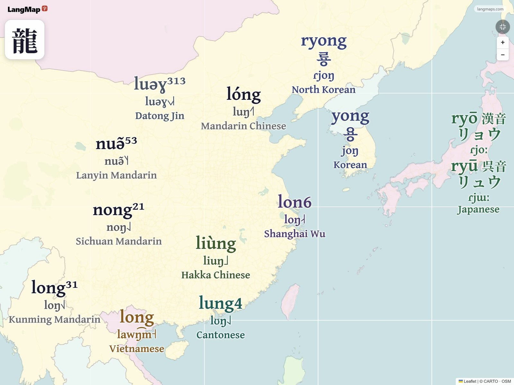

One Dragon, Five Languages
- Hanoi was once called Thăng Long, 昇龍, "Ascending Dragon."
- Japanese ryū, Mandarin lóng, Cantonese lung, Korean yong, Vietnamese long.
- Five languages that cannot understand one another, yet the family resemblance is still easy to hear.

Contents
The Ascending Dragon
In 1010, Emperor Lý Thái Tổ (李太祖) moved the Vietnamese capital to the city and named it:
昇龍 (Thăng Long)
昇 = ascend
龍 = dragon
"Ascending Dragon."
Today the city is called Hà Nội (河內), but the dragon came first.
One character, five readings
And 龍 is one of those characters whose old sound travelled remarkably well across East Asia.
Japanese: ryū
Mandarin: lóng
Cantonese: lung4
Korean: yong
Vietnamese: long
The map adds more voices from inside China: Hakka liùng, Shanghainese lon6.
The resemblance is not accidental.
Mandarin and Cantonese inherited the word through Chinese, while Japanese, Korean and Vietnamese borrowed their readings from earlier forms of Chinese. Baxter–Sagart reconstruct the Old Chinese word as *[mə]-roŋ. Its final -ng survives in Mandarin, Cantonese, Korean and Vietnamese; in Japanese it became the long vowel of ryū and ryō.
Japanese actually keeps two readings. The map shows ryō as the kan-on and ryū as the older go-on; ryū is the one most people know.
Korean even preserves another clue. In North Korea, 龍 is still 룡 (ryong), much closer to Japanese ryū and Vietnamese long. South Korean 용 (yong) reflects the modern initial-sound rule that removed initial r/l in words like this.
Same name, different character
But Hanoi's dragon has another surprise.
In 1805, Emperor Gia Long (嘉隆帝) kept the spoken name Thăng Long, but changed the second character:
昇龍 → 昇隆
The pronunciation remained Thăng Long.
But "Ascending Dragon" became something closer to "Rising Prosperity."
Same name to the ear.
Different character, different meaning.
Tonkin and Tokyo
And Hanoi has an even stranger connection to Japan.
For centuries it was also known as:
東京 (Đông Kinh)
literally, "Eastern Capital."
That name entered European languages as Tonkin, the old Western name for northern Vietnam and the origin of Gulf of Tonkin.
Now look at those characters again:
東京
In Vietnamese: Đông Kinh
In Japanese: Tōkyō
So Tonkin and Tokyo ultimately come from the same two Chinese characters.
One became the name of Japan's capital, when Edo was renamed 東京 in 1868.
The other became a European name for northern Vietnam.
And before either of those stories ended, Hanoi had already been the Ascending Dragon.